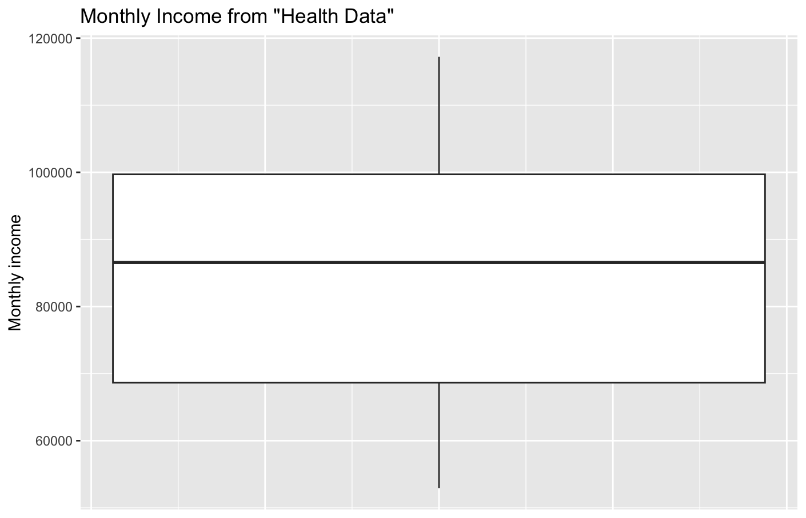
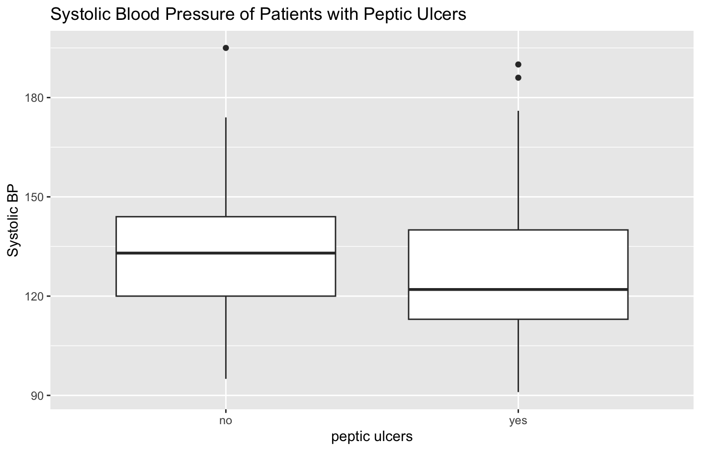

Our task was to analyse hospital patient data, specifically to see if there is any association between systolic blood pressure and peptic ulcers.
Here's a "glimpse" of the patient data.
glimpse(Health_Data) Rows: 210 Columns: 17 $ ID_no <dbl> 1, 2, 3, 4, 5, 6, 7, 8, 9, 10, 11, 12, 13, 14, 15, 16, 17, 18, 19, 20… $ age <dbl> 30, 41, 14, 28, 38, 26, 29, 36, 20, 29, 24, 28, 37, 36, 26, 33, 34, 3… $ sex <chr+lbl> "f", "m", "m", "m", "m", "m", "f", "f", "f", "f", "f", "m", "m", … $ sex_1 <dbl+lbl> 0, 1, 1, 1, 1, 1, 0, 0, 0, 0, 0, 1, 1, 1, 0, 0, 1, 1, 1, 1, 1, 0,… $ religion <dbl+lbl> 1, 2, 1, 1, 1, 2, 2, 1, 2, 1, 1, 1, 1, 1, 1, 1, 2, 1, 1, 1, 2, 2,… $ religion_2 <dbl+lbl> 1, 4, 1, 1, 1, 4, 2, 1, 4, 1, 1, 1, 1, 1, 1, 1, 4, 1, 1, 1, 4, 2,… $ occupation <dbl+lbl> 1, 4, 4, 1, 2, 4, 1, 2, 3, 1, 3, 4, 2, 4, 4, 2, 3, 3, 3, 1, 1, 3,… $ income <dbl> 79774, 70295, 100117, 105528, 71417, 95920, 72785, 65365, 84255, 7720… $ sbp <dbl> 107, 105, 157, 101, 101, 123, 148, 100, 102, 141, 122, 120, 111, 146,… $ dbp <dbl> 75, 75, 90, 71, 77, 86, 95, 72, 80, 100, 90, 70, 80, 81, 110, 112, 77… $ f_history <dbl+lbl> 0, 0, 0, 0, 0, 0, 1, 1, 1, 1, 0, 0, 0, 1, 1, 0, 0, 1, 0, 0, 0, 1,… $ pepticulcer <dbl+lbl> 2, 1, 2, 2, 2, 1, 2, 1, 2, 1, 2, 1, 2, 1, 1, 2, 2, 2, 2, 2, 2, 2,… $ diabetes <dbl+lbl> 2, 1, 2, 2, 1, 1, 1, 2, 2, 2, 1, 2, 2, 1, 2, 2, 2, 2, 1, 2, 1, 1,… $ post_test <dbl> 94.0, NA, NA, NA, NA, NA, 100.0, 90.5, 96.5, 100.0, 84.0, NA, NA, NA,… $ pre_test <dbl> 40.5, NA, NA, NA, NA, NA, 87.5, 65.5, 51.0, 55.5, 47.0, NA, NA, NA, 7… $ date_ad <date> 2020-05-02, 2020-05-02, 2020-05-02, 2020-05-02, 2020-05-02, 2020-05-… $ date_dis <date> 2020-05-07, 2020-05-06, 2020-05-08, 2020-05-10, 2020-05-11, 2020-05-…
First we found the mean, median and mode of the variables "sbp", "dbp" and "income".
I used summary() to find the mean and median.
Health_Data %>%
select(sbp, dbp, income) %>%
summary()
sbp dbp income
Min. : 91.0 Min. : 60.00 Min. : 52933
1st Qu.:114.0 1st Qu.: 74.00 1st Qu.: 68636
Median :123.0 Median : 82.00 Median : 86560
Mean :127.7 Mean : 82.77 Mean : 85194
3rd Qu.:141.8 3rd Qu.: 90.00 3rd Qu.: 99696
Max. :195.0 Max. :115.00 Max. :117210
I used count() to find the mode.
Health_Data %>%
count(sbp, sort = TRUE)
# A tibble: 70 × 2
sbp n
<dbl> <int>
1 120 12
2 102 9
3 122 9
Health_Data %>%
count(dbp, sort = TRUE)
# A tibble: 43 × 2
dbp n
<dbl> <int>
1 74 13
2 80 13
3 82 13
Health_Data %>%
count(income, sort = TRUE)
# A tibble: 210 × 2
income n
<dbl> <int>
1 52933 1
2 53435 1
3 53976 1
This showed "income" has no mode.
I showed "income" on a boxplot.
Health_Data %>% ggplot(aes(y = income)) + geom_boxplot() + labs(title = "Monthly Income from \"Health Data\"") + theme(axis.text.x = element_blank(), axis.ticks.x = element_blank())

I showed "systolic blood pressure" on a boxplot for patients without and with peptic ulcers.
Health_Data %>%
ggplot(aes(x = factor(pepticulcer), y = sbp)) +
geom_boxplot() +
labs(title = "Systolic Blood Pressure of Patients with Peptic Ulcers", x = "peptic ulcers") +
scale_x_discrete(labels = c("no", "yes"))

The boxplot appears to show that patients with peptic ulcers have lower systolic blood pressure, and a Google search showed there is some evidence for this.
I used a t-test to compare the data.
t.test(sbp ~ pepticulcer, data = Health_Data)
Welch Two Sample t-test
data: sbp by pepticulcer
t = 1.2142, df = 57.562, p-value = 0.2296
alternative hypothesis: true difference in means between group 1 and group 2 is not equal to 0
95 percent confidence interval:
-2.889367 11.795703
sample estimates:
mean in group 1 mean in group 2
131.3171 126.8639
The result shows that the p-value for this test is about 23%, which means there is a 23% possibility that these results are due to chance - this is not below 5%, which is generally considered "statistically significant".
These results are not strong evidence that peptic ulcers cause lower systolic blood pressure.
Working through this activity really helped me consider which statistics tests and R functions to use to answer the given questions, which is excellent practice for my career as a data scientist!